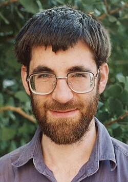

Richard Borcherds | |
|---|---|
 Borcherds in 1993 | |
| Born | Richard Ewen Borcherds 29 November 1959[2] Cape Town, South Africa |
| Alma mater | Trinity College, Cambridge |
| Known for | Monstrous moonshine theory Borcherds algebra Vertex algebras |
| Awards |
|
| Scientific career | |
| Fields | Mathematics |
| Institutions | |
| Thesis | The leech lattice and other lattices (1984) |
| John Horton Conway[1] | |
Doctoral students | Daniel Allcock[1] |
| Website | math |
Richard Ewen Borcherds (/ˈbɔːrtʃərdz/; born 29 November 1959)[2] is a British[3] mathematician currently working in quantum field theory. He is known for his work in lattices, group theory, and infinite-dimensional algebras,[4][5] for which he was awarded the Fields Medal in 1998. He is well known for his proof of monstrous moonshine using ideas from string theory.
Borcherds was born in Cape Town, South Africa, but the family moved to Birmingham in the United Kingdom when he was six months old.[6]
Borcherds was educated at King Edward's School, Birmingham. As a student, Borcherds won a gold medal, silver medal, and special prize in the International Mathematical Olympiad.[7] He attended university at Trinity College, Cambridge,[8] where he studied under John Horton Conway.[9]
After receiving his doctorate in 1985, Borcherds has held various alternating positions at Cambridge and the University of California, Berkeley, serving as Morrey Assistant Professor of Mathematics at Berkeley from 1987 to 1988. He was a Royal Society University Research Fellow.[10][8] From 1996 he held a Royal Society Research Professorship at Cambridge before returning to Berkeley in 1999 as Professor of Mathematics.[8]
He did notable work on the Monstrous moonshine theory.[4]
He introduced vertex algebras.[11]
An interview with Simon Singh for The Guardian, in which Borcherds suggested he might have some sort of traits possibly associated with Asperger syndrome,[6] led to a chapter about him in a book on autism by Simon Baron-Cohen.[12][13] Baron-Cohen insinuated that while Borcherds may have had autistic traits, he did not meet a formal diagnosis of Asperger's syndrome.[12]
In 1992 Borcherds was one of the first recipients of the EMS prizes awarded at the first European Congress of Mathematics in Paris, and in 1994 he was an invited speaker at the International Congress of Mathematicians in Zurich.[9] In 1994, he was elected to be a Fellow of the Royal Society.[14] In 1998 at the 23rd International Congress of Mathematicians in Berlin, Germany he received the Fields Medal together with Maxim Kontsevich, William Timothy Gowers and Curtis T. McMullen.[9] The award cited him "for his contributions to algebra, the theory of automorphic forms, and mathematical physics, including the introduction of vertex algebras and Borcherds' Lie algebras, the proof of the Conway-Norton moonshine conjecture[15] and the discovery of a new class of automorphic infinite products." In 2012 he became a fellow of the American Mathematical Society,[16] and in 2014 he was elected to the National Academy of Sciences.[17]
.jpg){kind=link}